Ordinary differential equations¶
Solving the ODE initial value problem (odefun)¶
- mpmath.odefun(ctx, F, x0, y0, tol=None, degree=None, method='taylor', verbose=False)¶
Returns a function 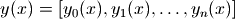 that is a numerical solution of the 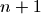-dimensional first-order ordinary differential equation (ODE) system
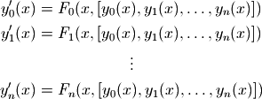
The derivatives are specified by the vector-valued function F that evaluates 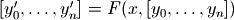. The initial point 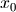 is specified by the scalar argument x0, and the initial value 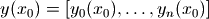 is specified by the vector argument y0.
For convenience, if the system is one-dimensional, you may optionally provide just a scalar value for y0. In this case, F should accept a scalar y argument and return a scalar. The solution function y will return scalar values instead of length-1 vectors.
Evaluation of the solution function 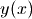 is permitted for any 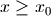.
A high-order ODE can be solved by transforming it into first-order vector form. This transformation is described in standard texts on ODEs. Examples will also be given below.
Options, speed and accuracy
By default, odefun() uses a high-order Taylor series method. For reasonably well-behaved problems, the solution will be fully accurate to within the working precision. Note that F must be possible to evaluate to very high precision for the generation of Taylor series to work.
To get a faster but less accurate solution, you can set a large value for tol (which defaults roughly to eps). If you just want to plot the solution or perform a basic simulation, tol = 0.01 is likely sufficient.
The degree argument controls the degree of the solver (with method=’taylor’, this is the degree of the Taylor series expansion). A higher degree means that a longer step can be taken before a new local solution must be generated from F, meaning that fewer steps are required to get from to a given 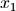. On the other hand, a higher degree also means that each local solution becomes more expensive (i.e., more evaluations of F are required per step, and at higher precision).
The optimal setting therefore involves a tradeoff. Generally, decreasing the degree for Taylor series is likely to give faster solution at low precision, while increasing is likely to be better at higher precision.
The function object returned by odefun() caches the solutions at all step points and uses polynomial interpolation between step points. Therefore, once 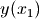 has been evaluated for some , can be evaluated very quickly for any
 .
and continuing the evaluation up to 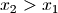 is also fast.
.
and continuing the evaluation up to 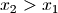 is also fast.Examples of first-order ODEs
We will solve the standard test problem 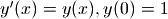 which has explicit solution 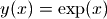:
>>> from mpmath import * >>> mp.dps = 15; mp.pretty = True >>> f = odefun(lambda x, y: y, 0, 1) >>> for x in [0, 1, 2.5]: ... print f(x), exp(x) ... 1.0 1.0 2.71828182845905 2.71828182845905 12.1824939607035 12.1824939607035
The solution with high precision:
>>> mp.dps = 50 >>> f = odefun(lambda x, y: y, 0, 1) >>> f(1) 2.7182818284590452353602874713526624977572470937 >>> exp(1) 2.7182818284590452353602874713526624977572470937
Using the more general vectorized form, the test problem can be input as (note that f returns a 1-element vector):
>>> mp.dps = 15 >>> f = odefun(lambda x, y: [y[0]], 0, [1]) >>> f(1) [2.71828182845905]
odefun() can solve nonlinear ODEs, which are generally impossible (and at best difficult) to solve analytically. As an example of a nonlinear ODE, we will solve 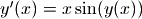 for 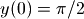. An exact solution happens to be known for this problem, and is given by 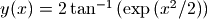:
>>> f = odefun(lambda x, y: x*sin(y), 0, pi/2) >>> for x in [2, 5, 10]: ... print f(x), 2*atan(exp(mpf(x)**2/2)) ... 2.87255666284091 2.87255666284091 3.14158520028345 3.14158520028345 3.14159265358979 3.14159265358979
If 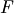 is independent of
 , an ODE can be solved using direct
integration. We can therefore obtain a reference solution with
quad():
, an ODE can be solved using direct
integration. We can therefore obtain a reference solution with
quad():>>> f = lambda x: (1+x**2)/(1+x**3) >>> g = odefun(lambda x, y: f(x), pi, 0) >>> g(2*pi) 0.72128263801696 >>> quad(f, [pi, 2*pi]) 0.72128263801696
Examples of second-order ODEs
We will solve the harmonic oscillator equation 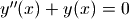. To do this, we introduce the helper functions 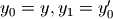 whereby the original equation can be written as 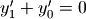. Put together, we get the first-order, two-dimensional vector ODE
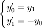
To get a well-defined IVP, we need two initial values. With 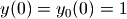 and 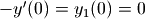, the problem will of course be solved by 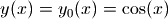 and 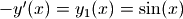. We check this:
>>> f = odefun(lambda x, y: [-y[1], y[0]], 0, [1, 0]) >>> for x in [0, 1, 2.5, 10]: ... nprint(f(x), 15) ... nprint([cos(x), sin(x)], 15) ... print "---" ... [1.0, 0.0] [1.0, 0.0] --- [0.54030230586814, 0.841470984807897] [0.54030230586814, 0.841470984807897] --- [-0.801143615546934, 0.598472144103957] [-0.801143615546934, 0.598472144103957] --- [-0.839071529076452, -0.54402111088937] [-0.839071529076452, -0.54402111088937] ---
Note that we get both the sine and the cosine solutions simultaneously.
TODO
- Better automatic choice of degree and step size
- Make determination of Taylor series convergence radius more robust
- Allow solution for 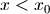
- Allow solution for complex

- Test for difficult (ill-conditioned) problems
- Implement Runge-Kutta and other algorithms